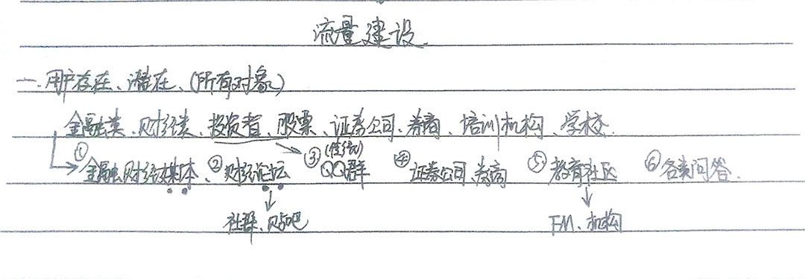

渠道、内容、用户、活动、新媒体；你的圈子大了吗？
你的圈子大吗？
本文2017年所感
我一直很想和各圈子里的大佬交流，因为交流的过程能听到各种角度解析的观点，并且能扩张自己看待问题的知识网，无论是作为何种职业，世界科技进步你应该有所了解，因为知识就是随科技和体验的点滴所陶冶锤炼打造总结出来的。
所以我就想问了，你为什么不看发布会？你看发布会到底关注了什么？
我虽不善读长篇书籍，但我喜欢提炼知识精点。每个人读书都有自己的方与法，而我只感悟知识给我多少需求量，只有能让我产生以往不同想法的，我会认真体会，其余的我不想浪费现有时间去深究，因为想也没有，也许是现在还未能体会到那部分，又或者当前价值与你价值不能相呼应。
而每一场发布会，尤其是科技发布会，必定是精中精华，关注8年的各类发布会，每一场我都会或多或少写点感悟，虽然不能与各位大佬去攀比，但我至少可以不断的向他们靠近啊！看发布会既能让你感受科技技术的自豪，也能让你从中体会职场感悟，因为他们本身就是从发现用户需求、讨论需求、实现需求这样一步一步提炼之后的内容了！
所以我今天回家边吃饭边看小米今天的发布会，简单提炼一些感受吧：
「1」
开始讲到出货量的问题，作为玩机6年里的发烧友吧，开始我会特别注意能不能买（抢）到产品，但随着个人的社交和对互联网的熟悉，买不买的到产品不是你应该考虑的，你应该考虑的是你到底有没有必要买。有必要，那一定是能买到的，起码现在我不担心我买不到某个市场上热门的产品，只是说我有没有这个必要。记得在成都某次去丹秋教育集团公司面试，与新媒体主管聊了3个小时吧，在谈到“饥饿营销”的方式中，恰好扩展性的长谈起来，对方透露说是小米创业时他所在公司给小米企划参与了这个，我不清楚到底是不是，起码这个销售模式是真实存在的，其余不过多深究，因为央妈也有专业分析这中销售模式的，大家可以去搜索。
「2」
其中雷军先生说到发展到如今，内部遇到很多压力和问题，这个作为任何一个公司（特别是创业公司）都会面临的重大问题！
那就要看公司有没有发现问题，有没有能力去完善（调整）和处理（简化），以及持续的夯实基础！
讲到这里，我立马又想到乐视风波，什么蒙眼狂奔、为梦想窒息、吹过的nb一一实现，这些讲真 真感动过我，我也在这样的鼓励下也为自己努力狂奔过，虽然最后没有蒙眼，但起码真让我为其感到过自豪！
现在想来，基础是一个公司的根本，只有在强化基础之上完善更多，诚实踏实的干，同时这个更多能演变成公司的收益，这样才能走的更长久，而不是一味的“烧钱”，没有收益模式。
「3」
这就是我上面说的，除了基础和踏实的干，一个项目如果没有一个模式和创立者对于这个“宝宝”的期望以及文化渲染，最多还是只能算在调研科研中的项目，不能说创业，就可以让员工团队也是蒙着眼睛干事情，无规矩不成方圆！
而乐视以7大“大屏生态”打造用户为核心，按平台、内容、应用、终端垂直发展的生态闭环为市场发展扩展思路；而小米则是以坚持做感动人心的产品、技术创新，铁人三项：互联网（MIUI起步）+硬件（手机再前进）+新零售（自营商城扩张到米家）。
谈到小米新零售，有两种线下的店面：官方米家+米粉参与小米小店。小米小店的方式是申请者自主提交资料，我觉得这个应该是为米家造人气的一种运营方式吧，虽不及传统经销商那样需要开门店和繁琐的申请流程，具体效果如何我没有参与，所以就不得而知了。
乐视的旗舰店除北京总部，其他城市都是代理商老板自己授权开的，只卖产品，没有维修！这个作为现有体验店来说，没有自家的维修点，我个人觉得是反人类的模式，你这不是明摆着让用户感受到有后顾之忧吗？而小米苹果只要是米家，必定有自己的维修！有没有必要自家修自家产品，你们可以思考1秒钟！
当然还有老罗的锤子，这里就不讲了，后面给大家单独分享，其实很多人只看到老罗的情怀模式，并没有看到他另一个工匠精神的模式！
所以，一个成功的项目由创业起步不断发展，都是由于已经找到自己的一个最有技术含量的点，进行市场和业务的扩张的，而不是盲目在织线，思路都很清晰，以及未来规划都是围绕一个大目标去不断试错和优化的！
「4」
继续上面的讲，有了产品，自然都会想到互联网，而想到互联网就会想到新媒体，所以就出现了各种形态的新媒体运营岗位。
而新媒体就是通过互联网来扩张自己产品在用户手里使用的几率和频率，在传统企业直白点的说法就是让你做互联网就是让我的东西能卖出去更多，赚更多的钱（这个观点是我在我舅的餐饮集团公司里体验生活与做一些主管交流听到的）。
其实我想表达的只有一点：产品本身的亮点和最具有技术含量的是什么！让团队或者一名员工都感到自豪的一个点是什么？那必将是我们运营人不断运营成功的点！
那在扩展一下，这个自豪的点，自然也是我作为用户的时候，觉得是我的需求，同时我会去使用／重复使用的点咯！
所以，在研发产品和创造产品的使用，一定要让自己成为用户，并且要先关注自己，而不是一开始就去关注产品。为什么这么讲？因为只有抛弃那些站在产品思考的主观思维，思考自己的需求，这样才能客观的评估自己的产品价值！而不要自我感觉良好久了，就真的变成了自嗨！
「5」总结
讲到这么多，其实站在本质上你会发现这么简单：
运营（又或者不局限运营），除了那些存在和即将存在的技能技巧之外，你还需要将自己练就成能自我场景化。
技能技巧都是后天可以不断积累和学到的，基本只是一个积累和不断分解又重合的过程，这个只要走上这条路，就去多积累就好。而自我场景化，这个事一个很主观的思维模型，在不同人所经历的事和主观思维方式上，都会产生不同的结果，这个就需要自己体验和感悟不同场景，以及换位思考自我提升来客观的模拟某一个场景和的到相应的解决方案！
同时场景化之后，除自己客观判断，还需要与你身边的人，或者你的用户来进行讨论和互动，得到你所未想到的场景，既能得到更多，也能补充自己。
而这个用户从何而来？
1、一个行业自然有其适应的用户群体存在，我看到过很多寻找用户的分析法，我个人觉得可以是可以，但我比较觉得就直接把这个问题带入到现实生活进行思考会让我来的更快！
比如我想找一个金融这个领域相关的用户（很早就小小思考了下）：

2、渠道：无非就两种-付费、免费
而这个付费，你可以针对自己所处的行业，进行一些商务合作谈判，当然如果说公司本身是怕花大钱的，我觉得这条路不适合你发展，因为很多付费的大流量平台（用户日常喜欢浏览的）都很贵，小平台讲真很多人都不知道的，所以对于你的曝光讲花钱并没有效果。
而说到免费，就互联网3.0时代：移动端、自媒体、论坛bbs、问答等等
用户找到之后我们该怎么办？
其实就一件事：留住他们！那究竟怎么留住他们，你所需要思考的本质就是与他们沟通交流，了解他们现在以及将来的需求是什么！我们就把这些需求演变成内容提供给用户，并在持续服务好他们，自然就留住了。千万不要自己觉得这个内容可以，你就推给用户，我一直说的不要自嗨，千万不要自嗨！
所以你所要做的就是：寻找用户—内容—留住用户—寻找用户的循环闭环。
与用户能真实交流互动，他们能自发的给产品提意见，产品也能帮助他们解决难题，我觉得这不仅是很多人心中的酷，更是我价值观理解的酷！